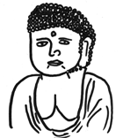
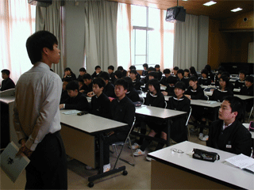
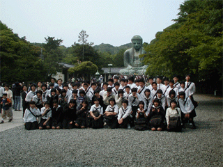
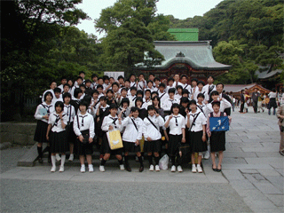
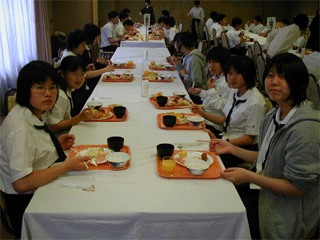
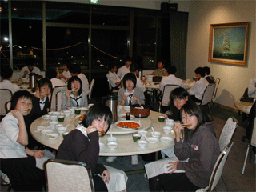
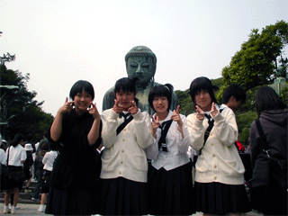
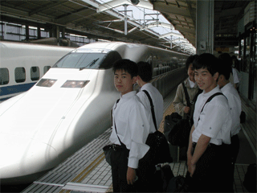
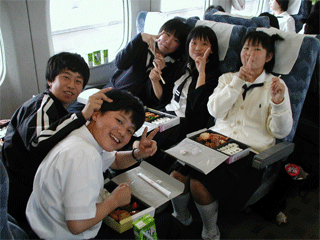

|  | 2003年
京都共栄学園中学・修学旅行報告ダイジェスト |
||||
|
|
|||||
| すでに懐かしい感じもある、昨年の修学旅行...
ダイジェストでお楽しみください。なお、これらの写真は大きい画像で 撮影したものです。画像をクリックしていただければ、大きい画像が出ます。（1600×1200ピクセル・350kb前後） 意図的に誰かを写そうとしたわけではありません。写っていたらラッ キーと言うことでご了承ください。（引率-あ） 2004.1.10. |
|||||
|  | ||||
| 結団式
しおりを配布して、全体の諸注意をしている森先生。 |
|  | ||||
| 鎌倉大仏集合写真
紙焼きもお配りしてあると思いますが、念のため...。 |
| 鶴岡八幡で発表する安田くん
両丹日々新聞に送ったのがこの写真です。完全にヤラセ写真なのがおわ かりでしょうか？ |
|  | ||||
| 集合写真その２ |
|  | ||||
| ホテル朝食
バイキングとはいえ、毎回同じようなメニューが出るので、当然チョイ スするものも同じになる。よってバイキングの意味がない...。 |
|  | ||||
| 船の科学館夕食
なぜかここは中華。それなりのお味ですが、生徒には良いかも知れませ ん。 |
|  | ||||
| 大仏で
これは某資料やパンフレットで使用した写真。『ゲッツ』がなつかし い。 |
|  | ||||
| のぞみ
これは、お気に入りの一枚。実際に乗る車両がホームに入った瞬間を、 古いデジカメで撮るのは至難の技です。（シャッターのタイムラグが大きいもんで...） |
|  | ||||
| 仲良し弁当
男女で仲良くお弁当タイム。 |
| 今から思えば、「こういう時もあったなあ....」という感じです。本当に生徒の成長は早くて、びっくりしてしまいま す。ダイジェストはこれにて失礼します。 |